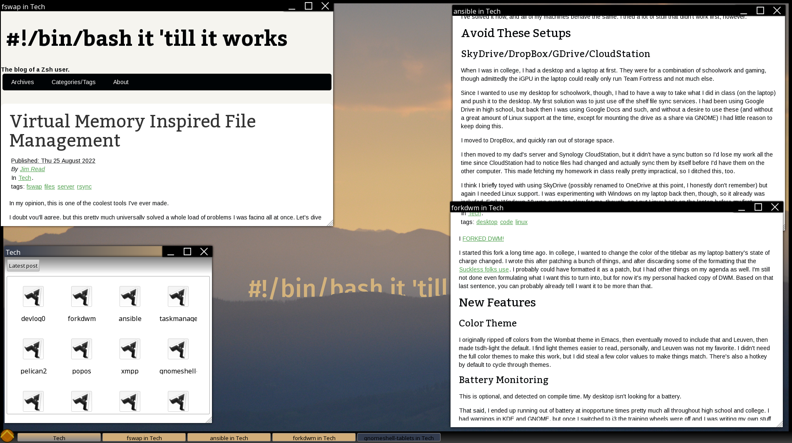

I've posted a series of articles talking about my transition away from hand-coded HTML to Pelican. However, in all of this, I haven't really talked about my own workflow and how I handle writing and posting to the blog. Now that I've more or less finished transferring everything over to the new site, I figured it would be a good time to talk about why I use Pelican, why I intend to stick with it, what problems it solves, and what tips and tricks I wish I had known that would have made the transition a more obvious choice.
Before I dive in, I should mention that most of this probably applies to most other static site generators, I picked Pelican pretty much because I already was familiar with it, though there are other more flexible options that you can use instead and the same general rules apply.
Pelican Site Structure
Themes
I think this is something of a misnomer. Themes in Pelican aren't just visual information, they also include page layout, some content definitions (like the "Social" links at the bottom of this page), and of course your CSS definitions. You can stick to the layout that Pelican provides by default (which is mostly how this site is laid out) or you can do something totally unique that isn't standard at all. The desktop site is a good example, in the theme that's one page, not a collection of pages. The layout, JavaScript, styling, some of the main menu buttons, the wallpaper, etc. are all part of the "theme" that the site uses. This level of flexibility is (in my opinion) the secret weapon of such a system, pushing it far beyond what the name "theme" suggests.
There is a difference between a theme and a static web page, namely that the theme contains mostly placeholders for the content. A well designed site contains most (or preferably all) of its content in the content section, not the theme. This means no copyright blocks, no headers, no catchphrases, just a definition of where those things should go, fonts, colors, layout. The idea is that you should be able to take your theme, rip the content out, then put someone else's in, and the blog would suddenly take on the identity of that other person.
My own discipline with the theme vs content line is not super great at present. I do have the bottom text and some icon definitions hard-coded, as well as a couple of the links in the desktop site main menu. I do intend to fix this at some point (probably soon), but it bears mentioning that I'm not perfect at it for now.
Had I known what Pelican themes were from the start, I would have started using it right away and skipped the hand-coded days altogether.
Content
This is where all of your posts, pages, articles, etc. go. I'm right now writing to a file in ~/doc/blog/content/posts in Markdown. The layout, styling, and boilerplate that needs to be present for the full page to appear as a #!/bin/bash it 'till it works post are all notably absent here, that's what the theme and Pelican are for. I can just focus on what I'm writing. As a matter of fact, I regularly write full articles without leaving Emacs at all until the post is completely written and essentially ready to publish.
As the name "static site generator" suggests, Pelican is a site generator. It takes a list of the posts that I've written, certain facts about these posts, and the post content, and places it into the theme to create the final output. That output winds up as plain HTML, so while I get a nice, cushy place to just write, you see the same page style, the same header formatting, the same links, the same everything from page to page without me working for it. A lot of people will argue for systems like WordPress to do this kind of thing, but I would argue that systems like Pelican make more sense, since all of the content management work is done ahead of time, instead of requiring a server to generate a page to serve plain text and a few images.
Configuration
What I've kind of glossed over so far is the configuration settings, in Pelican this would be either pelicanconf.py or publishconf.py or both. This is where things like the site logo, name, and other global information goes. I like to tell people to email me if they have any comments about a post (or just want to say hi), and to make this easy I have a variable in my pelicanconf containing my email, along with a link at the bottom of each article so your email client already has the name of the article you were reading in the subject so I can see what you're commenting about. It's a neat feature, click the link at the bottom and try it out if you have a second!
The pelicanconf.py file also contains things like my name, the name of the blog, the catchy subtitle right below it, the URL so that all of the links work right, which theme I want to use, etc. In a way this makes it part of the "content", since you would have to exchange it to exchange the identity of your site for someone else's, but it impacts other things too, like what theme to use. Since the theme is the whole site layout and would more accurately be called the site template, there's also the possibility that (like with my site) there are config variables that really only make sense with a certain theme.
My Writing Process
I'm pretty informal with my personal writings. Most of what you see on the site is barely edited from its first draft form, usually only to correct flow issues or cases where I got distracted and lost the point of what I was writing mid sentence. However, there are a few "behind the curtain" notes I do want to share.
Basic Workflow
This is the boring part. I basically write the post in Emacs, and save it to content/posts/{{ article.slug }}.md. I run Pelican's built-in make devserver-global command so that I can browse the work-in-progress "site" on my LAN using any of the devices I own to check for issues. Unless you are on public WiFi or something, I recommend doing this since it lets you test out a post/site on your phone before it goes live.
Once I'm done, the proofreading is done, and I'm satisfied with the formatting, I copy the contents of the output/ directory to my local clone of my GitHub pages repo, then commit the new changes and push. GitHub takes care of the rest and my post goes live.
I recently heard that it's possible to take the Pelican directory structure and make GitHub's pipeline generate the final page. This would mean I could just commit the Pelican tree and GitHub's servers would generate the page for me, if this all is true. I haven't tried it myself.
The Desktop Site Has Been A Huge Help
I can't overstate this. The design of the desktop site is perfect for looking at (and cross-referencing) a lot of my posts all at once. If I'm writing an article, I can open it in the desktop and just reload the iframe it sits in every time I change it, and I can also divide up that browser window with a bunch of other posts I'm referencing without spawning a ton of extra browser windows. Admittedly, I could just open a whole bunch of surf windows, and sometimes I do, but the desktop site is kinda cool, so I alternate between the two. Plus, I don't have to configure a layout for all of the posts I'm opening, I can just open them and drag them around. Normally I find that to be a disadvantage and something that needs to be contained, but again making this a site achieves the containment part.
I took this screenshot while still writing the virtual memory inspired file management post: 
Use visual-line-mode
The first couple of posts I did after switching I navigated through the Emacs menus to find the setting to turn on word wrap. This makes draft content much easier to read, and so eventually I learned that Emacs calls this visual-line-mode, so now M-x vi-l-m is the first thing I do when I open a new post window.
Read The Post Before You Publish It!
I don't mean read in Markdown, open your browser and read it in the final page. I missed this on my mac and cheese recipe, so for a while I used a > and the whole line became italic rather than showing the > sign. This is the symbol markdown uses for block quotes, and I hadn't thought of that at the time.
My Take on Static Site Blogging
I've used blogger before, and I've hand-coded a site before. I consider these to be the two extremes in the world of blogging. With blogger, everything is done for you to the point where it takes a fair amount of effort to make it show posts in the way you want. For example, I had to hand-write all of the <code> blocks since their editor didn't have any, and this included explicitly defining indentation. That gets tiring fast. Hand-coded sites, on the other hand, do absolutely nothing for you, and they impose no structure at all. The solution I settled on at the time was using Groff to make the HTML, then editing it by hand to include my (rather bare) stylesheet. I would then link it by hand to the desktop and "classic" sites individually.
Pelican is in a nice sweet spot. It includes the advantages to the user of hand-coded HTML, namely page performance, the consistent style and layout of the theme, and a flexible backend that takes more than one option for markup format for me.
However, it's not without its drawbacks. Blogger provides hosting, which is critical. Hosting a site, even a small one, pretty much requires that you have some amount of technical knowledge or a fair amount of cash to burn on server space. Furthermore, Pelican requires that you have some basic knowledge of Python and Pelican's own linking formats, and if you want to create your own theme you also need knowledge of HTML, CSS, and preferably Jinja2 (though you can learn that pretty fast with Pelican). In my case, I use GitHub pages, which also requires some knowledge of Git.
So, take that as you will. If you can keep up with everything I talk about on my blog and you're still using Blogger, I'm here to tell you right now that Pelican is easier. Markdown alone would be enough to make this true, with its integrated <code> support, but Pelican also can add syntax highlighting to your code on its own, removing the need to work around that with external tools (though if you really want to go that route, here's one way to do it). If you aren't comfortable with Python, or you don't already have some interest in software, maybe look elsewhere. I won't say you won't get anything out of Pelican and static site hosting, there's a chance you will, but you have to be willing to invest the time to figure out how to set up and run such a site. Blogger's chief advantage is that you don't have to do this.